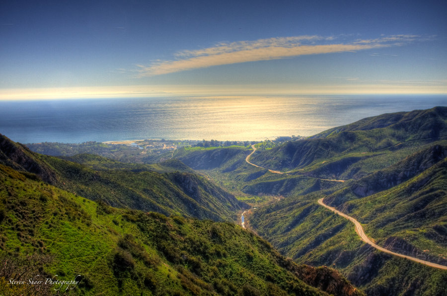
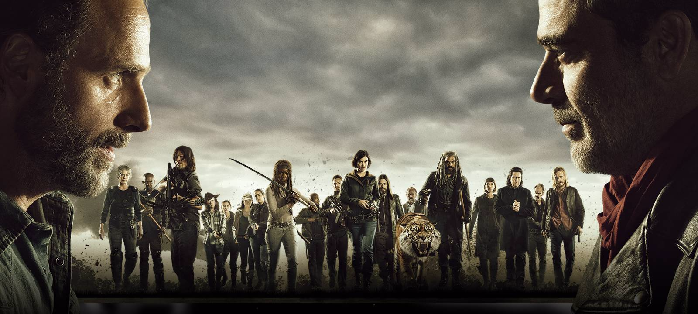

About Me
portfolio
ABOUT ME
My name is Yajaira Alvarado I am a STEM Academy of Boyle Height student.I've been in STEM for over three years I Am currently a senior with very high expectation in my education and future self. Down below there are some of my hobbies and interest that I like to do. Feel free to check them out.
ADVENTURES!
Hiking is an adventure, especially with friends.The struggle of getting to the top while sweating and legs getting hard to lift is
something.It is a great way to keep yourself active, healthy, and it clears your
mind for a while.

TV shows!
The Walking Dead is an intense show it keeps me on the edge every time a new episode is on. It's all about fighting "walkers" and
the most scary thing is not the zombies but the living fighting for supplies and
land to survive.

TWD